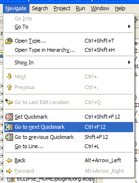

If you prefer to work with Quickmarks "M company Style" (only 3 key bindings instead of 20, but 'toggling' through your scope only, no 'mark move') you can configure this plugin to do that. A mild form would be to have the Quickmarks 1-9 to still work "B company style", and use Quickmark 0 to work "M company Style" (the best of both worlds):
Now you can use the Quickmark 0 in your preferred style, and optionally still use all other nine Quickmarks.
An extreme form would be to even unbind all the keys for Quickmarks 1-9
additionally. As this is much work to do we deliver another
plugin.xml.msstyle. If you really want to only work with
this (e.g. to get the key bindings available for other actions),
then:
plugin.xml to plugin.xml.originalplugin.xml.msstyle over plugin.xml"Quickmark at line {1}"When you have done this, the menu has changed:

Compare to the default. The key binding section in the preferences is changed accordingly: there are only 3 actions left to bind keys to. Other changes are:
If you prefer to work with the original key bindings Ctrl+0-9 for jumping to a Quickmark instead of the default ones Alt+0-9, then you might manually redefine all the bindings yourself.
Or you may use the delivered *.bstyle files:
plugin.xml to plugin.xml.originalplugin.xml.bstyle over plugin.xmlplugin.properties to plugin.properties.originalplugin.properties.bstyle over plugin.propertiesNote however, that there are 2 key binding conflicts:
Especially the 'Quickfix' is so important when developing Java code, that most people might not consider rebinding that action. If you are one of them you must live without Quickmark 1 or (inconsistently) jump to it with Alt+1 bound to 'Go to previous Quickmark 1' or by means of the menu. If you decide to live without Quickmark 1 then you better unbind 'Set Quickmark 1' to not accidentally set it anywhere.
I always wondered, why Ctrl+1 was used for "Quickfix", a much better binding seems Ctrl+Q to me, which is even a little bit better reachable with short fingers. But Ctrl+Q is bound to "Go to Last Edit Location" ... now what, where is the 'Q' in that actions name??! And it is the only action using any modifier combination together with the letter 'Q'. And it seems to be closely related to "Back" and "Forward", which are bound to Alt+Arrow_Left and Alt+Arrow_Right respectively. And Alt+Arrow_Up is free! So I suggest:
If you are an Emacs purist, then you probably havn't this extension installed anyway, have you? If you work mostly with the 'point and mark' concept of Emacs and only occasionally use other Quickmarks then you might again just don't use Quickmark 2. Else:
See: